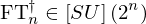
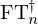
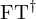

Expression of type Conditional¶
from the theory of proveit.physics.quantum.QFT¶
In [1]:
import proveit
# Automation is not needed when building an expression:
proveit.defaults.automation = False # This will speed things up.
proveit.defaults.inline_pngs = False # Makes files smaller.
%load_expr # Load the stored expression as 'stored_expr'
# import Expression classes needed to build the expression
from proveit import Conditional, n
from proveit.linalg import SU
from proveit.logic import InSet
from proveit.numbers import Exp, NaturalPos, two
from proveit.physics.quantum.QFT import InverseFourierTransform
In [2]:
# build up the expression from sub-expressions
expr = Conditional(InSet(InverseFourierTransform(n), SU(Exp(two, n))), InSet(n, NaturalPos))
Out[2]:
expr: 
In [3]:
# check that the built expression is the same as the stored expression
assert expr == stored_expr
assert expr._style_id == stored_expr._style_id
print("Passed sanity check: expr matches stored_expr")
In [4]:
# Show the LaTeX representation of the expression for convenience if you need it.
print(expr.latex())
In [5]:
# display the expression information
expr.expr_info()
Out[5]:
| core type | sub-expressions | expression | |
|---|---|---|---|
| 0 | Conditional | value: 1 condition: 2 | |
| 1 | Operation | operator: 4 operands: 3 |  |
| 2 | Operation | operator: 4 operands: 5 |  |
| 3 | ExprTuple | 6, 7 |  |
| 4 | Literal |  | |
| 5 | ExprTuple | 15, 8 |  |
| 6 | Operation | operator: 9 operand: 15 |  |
| 7 | Operation | operator: 10 operand: 11 |  |
| 8 | Literal |  | |
| 9 | Literal |  | |
| 10 | Literal |  | |
| 11 | Operation | operator: 12 operands: 13 |  |
| 12 | Literal |  | |
| 13 | ExprTuple | 14, 15 |  |
| 14 | Literal |  | |
| 15 | Variable |  |